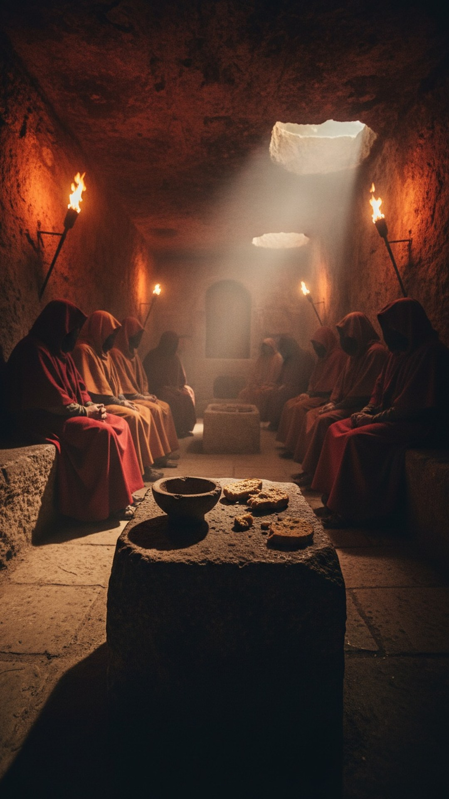

The best witness for the Mithras parallel is not a skeptic. He is a saint. Justin Martyr, one of the earliest Church Fathers, wrote to the Roman emperor around 150 AD that the cult of Mithras had a sacred meal of bread and a cup, parallel to the Christian Eucharist. He did not say the pagans were lying. He said demons had copied the Christian sacrament in advance.
This is part 6 of THE BLUEPRINT, our 23-part investigation into the figures who carried pieces of the Jesus story before the story was told. This chapter is where the argument stops being modern. It was already raging in the second century, and the Christians were the ones conceding the facts.

The god of the legions
Mithras began as Mithra, a Persian deity of covenant and light, and re-emerged inside the Roman Empire as the center of a mystery cult that spread wherever the legions marched. His worshippers met underground, in cave temples called mithraea, and the archaeology is overwhelming: hundreds of mithraea have been excavated from Syria to Britain, with an estimated 400-plus across the empire. London has one under a city block. Rome has them under churches, including under the basilica of San Clemente, where you can descend from a twelfth-century church, through a fourth-century church, into a Mithraic temple.
Inside, the pattern repeats: stone benches along the walls where initiates reclined for a shared ritual meal, cups and bowls in the excavation layers, seven grades of initiation, and at the far end the tauroctony, the cult image of Mithras slaying the bull, ringed by the twelve signs of the zodiac.
The confession
Now the texts. Justin Martyr, First Apology, chapter 66, describing the Christian Eucharist and then, in the same breath: the wicked demons have imitated this in the mysteries of Mithras, commanding the same thing to be done, for bread and a cup of water are set out in their rites of initiation. That is a second-century Christian, writing an official defense of the faith to the emperor of Rome, confirming that the rival sacred meal existed and matching its elements to his own.
Justin said demons copied the Eucharist in advance. Tertullian said demons copied baptism too. Neither man said the rituals were fake.
Fifty years later Tertullian went further. In his De praescriptione haereticorum he wrote that the devil, in the mysteries of Mithras, baptizes believers, promises the remission of sins at the washing, and signs his soldiers on the forehead. Baptism for the remission of sins, in a pagan cave temple, reported by a Church Father whose entire purpose was to discredit it. Retroactive demonic plagiarism was the best explanation the second century could produce, because denying the parallel was not an option for men whose readers could walk into a mithraeum and look.
Killing the fake claims
This series has rules, so here is the correction the internet needs. Mithras was not crucified: no ancient source says it, and in the Roman iconography he does not even die. The twelve disciples claim is also false: the twelve figures around the tauroctony are the zodiac, not followers. The December 25 birthday claim is weaker than advertised too, resting on late calendar evidence. We do not need any of it. The documented parallel, a sacred meal of bread and cup and an initiatory washing tied to salvation, is attested by the cult's own enemies.
The honest differences
Mithraism as Rome knew it is largely contemporary with early Christianity rather than centuries older, and scholars still debate how much the Roman cult inherited from its Persian ancestor. The direction of borrowing between the two rivals is genuinely arguable, which is exactly why Justin's line matters: he is the earliest witness we have, and he testifies that in his lifetime the two meals already mirrored each other so closely that supernatural sabotage was the only defense left.
Two rival religions, one empire, the same meal of bread and cup, the same washing for the remission of sins. The Christians said the demons stole it before it existed. The Mithraists left no writings to answer with, only four hundred temples under the floors of Europe.
If demons copied Christianity in advance, who taught the demons? The next chapter stays in Rome for the god who died on a Friday and rose on a Sunday, two centuries before Easter.
This is Part 6 of 23 in THE BLUEPRINT, an investigation into the pre-Christian figures who carried the pieces of the Jesus story. See every part of the series here.
Before you go
7 books the Vatican doesn't want you reading. Free PDF — the texts they cut, with sources. Joined by 140+ Inner Circle members.
No spam. Unsubscribe anytime.
Go deeper
The Hidden Canon, Vol. I — Enoch. Jubilees. Thomas. Mary. Judas. 90 pages, 14 chapters, every receipt cited. The books your Bible quietly removed.
Read the Canon →Books that informed this investigation
As an Amazon Associate, Hidden Epoch earns from qualifying purchases. Cost to you: nothing.
Research safely
The VPN we use to research without being tracked. First 3 months free.
Get NordVPN →